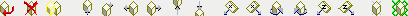

Het bouwen van objecten gaat in drie stappen:
klik met rechtermuis op een ander object en druk op de Insert-toets
Om een nieuw object te maken, kopieer je altijd een bestaand object. Zoek eerst een plek uit waar je een lege ruimte hebt om zelf te bouwen én in de buurt een ander object ziet staan. Daarmee kun je aan de slag:
Active Worlds heeft nu een kopie gemaakt van het object, je ziet aan de gele rand dat het object een klein stukje achter het originele object is geplaatst. Onderaan in de object-eigenschappen zie je jouw eigen naam staan: dit nieuwe object is nu van jou.
verplaats het object met de pijltjestoetsen naar een eigen plek
Het object kun je nu gaan verplaatsen. Objecten verplaatsen gaat grotendeels hetzelfde als zelf rondlopen, het kan met de volgende toetsen:
Al deze bewegingen kun je ook doen met de knoppenbalk van het object-eigenschappen-venster.
Knoppenbalk van het object-eigenschappen-venster
verander het object met de objectnaam en voeg een actie toe in het actieveld
Als je het object op de goede plaats hebt gezet, kun je het nog aanpassen, zie hieronder. Als je tevreden bent kun je het object plaatsen door het object-eigenschappen venster te sluiten.
Je kunt een object ook plaatsen door op de Enter-toets te drukken of met de linkermuisknop ergens in het 3D-beeld te klikken, maar niet op het object zelf.
Je kunt van elk object een ander object maken door in het objectnaam-veld
de naam van een ander 3D-model in te vullen. Verander je bijvoorbeeld
een object 5sign1s.rwx in een pd01.rwx, dan
krijg je een muur met een deuropening in plaats van een bordje.
Zie object hoe je aan objecten kunt komen.
In het beschrijvings-veld kun je een tekst toevoegen. Deze tekst kun je zien als je met je muis over het object heen gaat. Je gebruikt dit vooral bij een bordje. Als je in het actie-veld (zie hieronder) create sign plaatst, zal de tekst in het beschrijvings-veld als tekst op het bordje komen.
In het actie-veld kun allerlei acties aan een object toevoegen. Bijvoorbeeld een kleur toevoegen, het object laten draaien, een filmpje afspelen, etc. Zie acties voor alle mogelijkheden.
Meer kun je lezen op de 3Dwiki